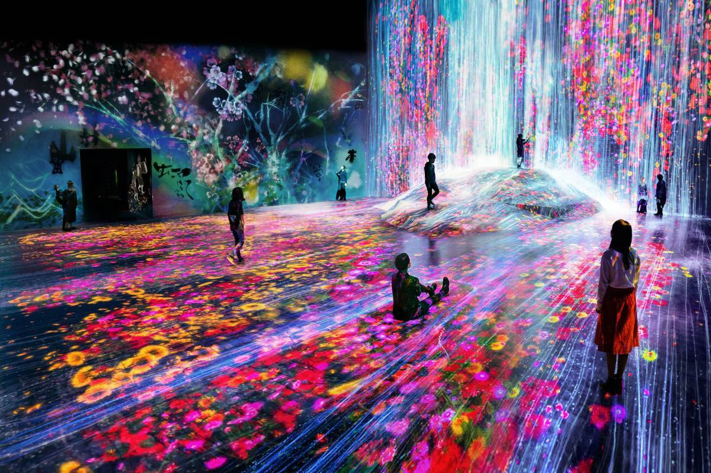

Our understanding of what dinosaurs look like have evolved from bird-like animals that were active, intelligent and warm-blooded, not reptilian like. The progression of what we’ve seen dinosaurs look like are based off of the perception of how creators and artists have portrayed dinosaurs like in Jurassic Park. This can affect our understanding of what archaeology is saying about them because when we’re provided with only with the remains of dinosaurs, and not knowing fully what they used to look like.
Other disciplines that use similar techniques would be creating physical spaces in digital spaces. This allows for the artist to be able to create the physical space in a way that they would interpret it, allowing there to be different perspectives on what is really true about the space (unless there have been studies that revolve around that specific space). Not entirely sure if this would be an example of it, but the teamLab museum in Japan incorporates the use of different digital art within physical spaces, which create a different sense of how lights and projections can change the perspective of how we view light and nature.
Characteristics of ‘Material Speculation’ are that it’s based on counterfactual artifacts and possible worlds, meaning that 1. They’re designed to be encountered in the actual world, but can be other worlds that are led through those encounters 2. The counterfactual artifacts exist in the actual world, meaning that they do exist in the actual world, but they simply create different perspectives and allow for other possibilities and experiences than what is already implied 3. Counterfactual artifacts are generators of possible worlds, meaning that they propose new possibilities within possible worlds that are imagined by designers and those who engage with the artifact. 4. Counterfactual artifacts are specially crafted, meaning that the designs are specific towards providing new possibilities, balancing between the possible and actual world.
This same technique can be used to create objects to refer to the past or current moment through creating simulations of the object based on how it looked at a certain time. This is a way for us to bring the object into a new light through creating various changes, whether it be the physical materials, parts, concepts or the purpose of the object.